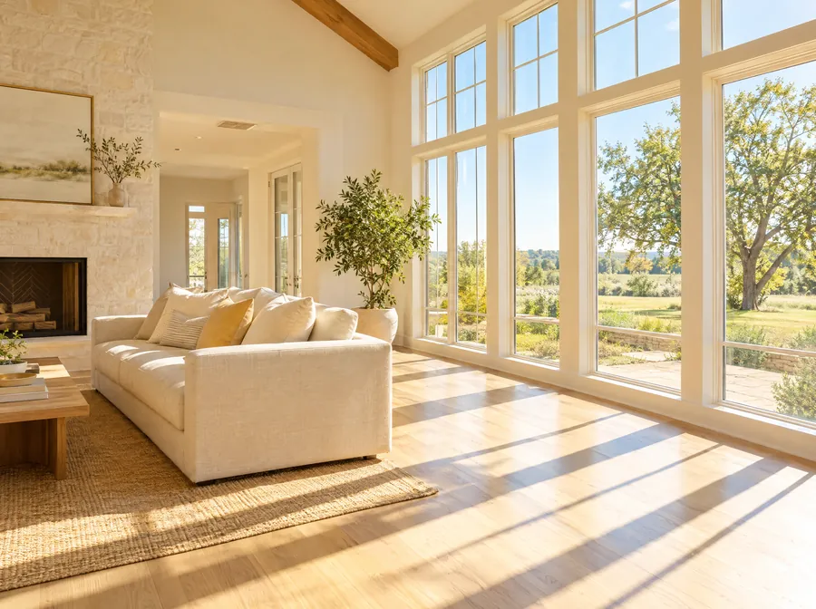
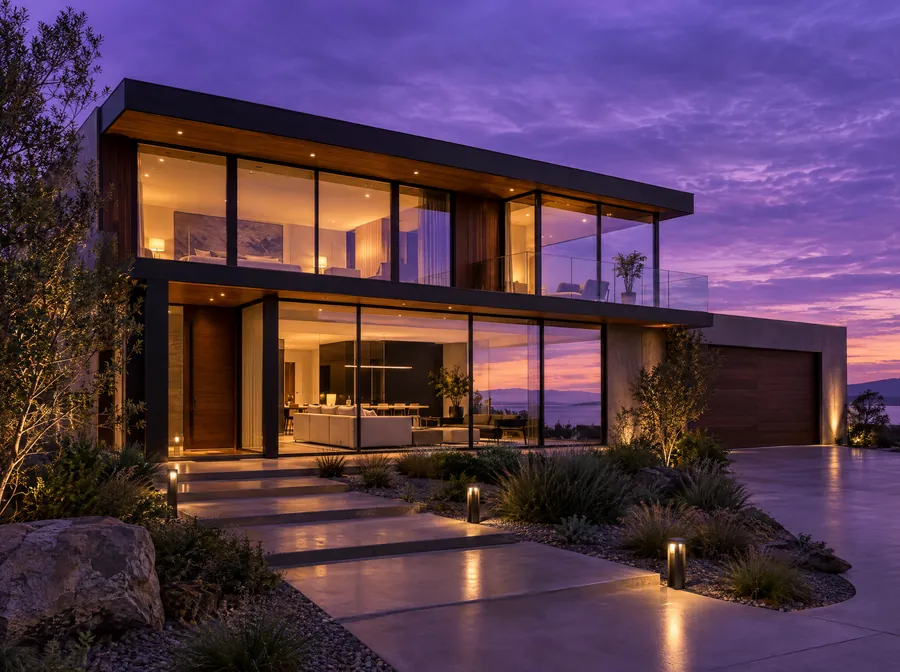

Let the sunshine in.
Sunline
YellowBright, confident, impossible to miss. Yellow on near-black reads like a work truck you remember, and nobody local owns it.
Sun
Ink
Butter
Cream
Each direction has its own colors, logo and photos. The logos mix and match with any palette, so if you love the green but want the sun logo, that works too. Tap any option to see the full website.

Bright, confident, impossible to miss. Yellow on near-black reads like a work truck you remember, and nobody local owns it.

Fresh, trustworthy, a little eco. The mark is a squeegee pass shaped like a C, for Complete.

Premium and distinctive. The mark keeps the C-and-W idea from his current logo, redrawn clean, with the reflection lines.
Every logo in every palette. Tell us the row and column you like.